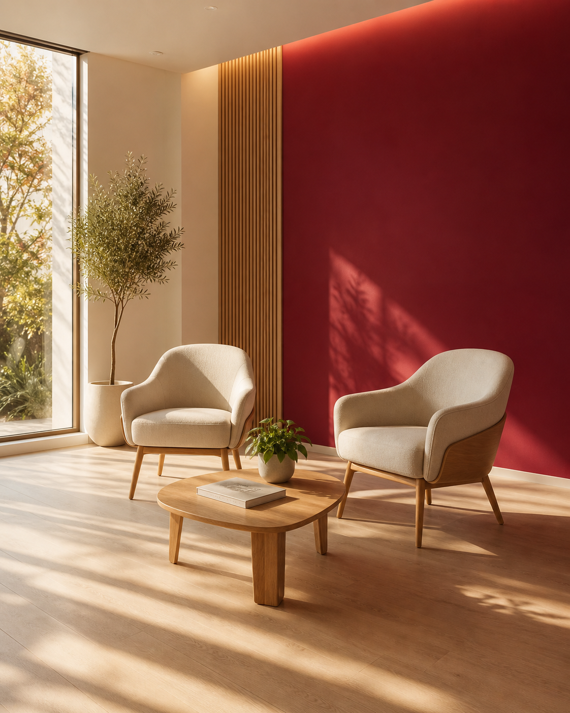

Indépendance
Nous ne sommes pas liés à un fabricant. Le modèle dépend uniquement de votre profil auditif et de votre vie.
Notre mission n'est pas de vendre des appareils, mais de réduire l'isolement provoqué par la perte auditive. Cela commence par écouter — vraiment — chaque personne qui pousse notre porte.

Tous ces sons que vos oreilles captent — un sens d'une finesse inouïe, et pourtant fragile. Avec le temps, l'audition s'use, on fait répéter, on perd le fil, on évite certaines situations. On parle moins. On s'isole.
Notre rôle est d'éviter cela.
Nous ne sommes pas liés à un fabricant. Le modèle dépend uniquement de votre profil auditif et de votre vie.
Mesures normalisées, cabine insonorisée, audiométrie tonale et vocale. Pas d'à-peu-près.
Pas de pression commerciale. On vous écoute, on explique, on ajuste à votre rythme.
AUDIOBEL accompagne les patients de la région liégeoise avec une approche fondée sur l'écoute, la précision des réglages et le suivi dans la durée.
Comme des centaines de patients avant vous, demandez un rendez-vous simple et sans pression. On vous écoute, on explique, on ajuste à votre rythme.
Prendre rendez-vousCréation d'AUDIOBEL à Liège avec une exigence : remettre l'écoute du patient au centre.
Installation d'une cabine clinique pour des mesures normalisées et reproductibles.
Élargissement du catalogue aux générations connectées et rechargeables.
Indépendance préservée, conventionnement INAMI, accompagnement administratif inclus.
Une parole claire, même en milieu vivant ou en groupe.
Moins de fatigue auditive en fin de journée.
Des conversations retrouvées, en famille comme entre amis.
Une solution adaptée à votre style de vie, sans compromis esthétique.
Cette page s'enrichira progressivement avec des contenus réels du centre.
Nos audiologistes, leurs diplômes et leur parcours.
Témoignages vérifiés de patients accompagnés à Liège.
Photos de l'accueil, des cabines et des salles de réglage.
Nos collaborations avec les ORL et prescripteurs de la région.
Un premier rendez-vous, sans engagement, pour faire le point sur votre audition.